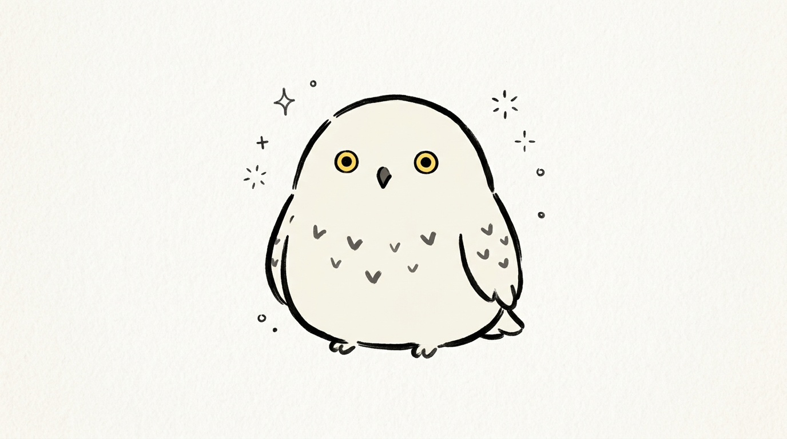
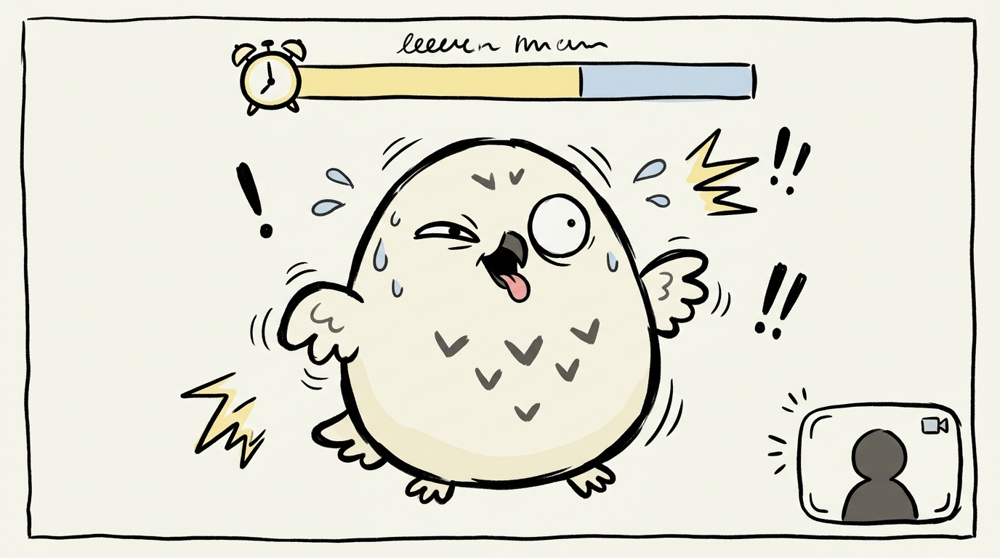
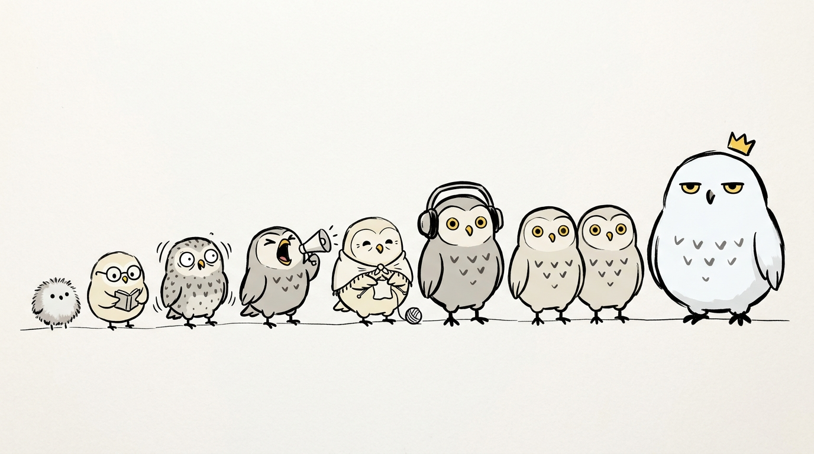

Don't blink. Don't laugh. Don't look away.
A webcam staring contest against a ladder of owls who cheat. They pull faces, crack jokes and yell HOOT. The camera watches your eyes, your smile and your head, and everything happens inside the browser.

key art concept (Google Flow)
| 🎮 | Genre Comedy reaction challenge, party game |
| 🌐 | Platform Web browser on itch.io, desktop and phone (front camera) |
| ⚙️ | Engine Phaser 3 + MediaPipe Face Landmarker, in the browser |
| 📷 | Camera Required. There is no non-camera mode. |
| 🎨 | Look Hand-drawn round doodle: thick brush-pen lines, flat colours, lots of paper |
| 🔤 | Language English |
Your face is the controller
No buttons during a match. Just keep a straight face.
The owls are the show
Every owl has a personality and a bag of dirty tricks.
Private by design
Video never leaves the device, and nothing about your face is saved.
Made for sharing
Short matches and a funny result card, perfect for clips.
3, 2, 1… STARE!

gameplay mockup: timer on top, your camera bottom right
I have never lost a staring contest. I also have never blinked. Ever. Probably.
How you lose
Blink
Eye-blink signal above your threshold for at least ~120 ms, which filters out noise.
Smile or laugh
Smile signal above your threshold, or the jaw opening together with a smile.
Look away
No face found, or the head turned past a limit for more than 0.5 s.
5-second calibration at first launch
Meet the cheaters

lineup concept: tiny beginner on the left, snowy boss Hootington on the right
| # | Owl | Personality | Main trick | Match |
|---|---|---|---|---|
| 1 | Hoot | The beginner | Funny faces only | 10 s |
| 2 | Professor Plume | Pompous | Reads terrible jokes on screen | 15 s |
| 3 | Twitchy | Can't sit still | Feathers, a fly crossing the screen | 20 s |
| 4 | Boomer | Loud | Sudden HOOT! and squeaky toys | 20 s |
| 5 | Grandma Owlbert | Sweet, then sneaky | Slow and kind, then a surprise face | 25 s |
| 6 | DJ Night | Party owl | Silly music and a dance | 25 s |
| 7 | The Twins | Double trouble | Two owls, overlapping tricks | 30 s |
| 8 | Great Horned Hootington | The boss | Every trick, mixed | 45 s |
Names are working names; match lengths are starting values for playtesting.
Dirty tricks
Faces
A big set of ugly, silly and surprising owl faces. This is the heart of the art.
Screen chaos
Feathers flying, screen shake, a bug walking across, a fake pop-up.
Sounds
HOOT!, a squeaky toy, a ticklish little tune.
Jokes
One-line jokes appear on screen, and reading them is the trap.
Tricks are drawn at random from each owl's set; later owls overlap them.
Privacy and screens
Privacy promises
- Camera video is processed only in the browser; no image or video leaves the device.
- This is explained in plain words before the browser asks for the camera.
- The small self-preview can be hidden.
- The result card has no face: "You out-stared Professor Plume for 42 s", the owl and the itch link.
Screen flow
Camera denied: a friendly screen explains it is required, with a retry button.
Doodles that stare back
Round doodle owls
Chubby egg-shaped owls, thick uneven brush-pen lines, flat colours and no shading. Comedy comes from simple, deadpan faces.
Soft palette
Off-white paper, white and grey owls, small yellow eyes, soft pale blue and yellow accents.
Audio
Tense ticking during a match, comedy stings when you lose, a fanfare when you win.
Build plan
- MediaPipe FaceLandmarker with face blendshapes, video mode, ~30 fps.
- itch.io's game iframe includes allow="camera" (seen on the Cake Tower page), so the camera should work; test on a real itch page first.
- Phones: front camera, portrait layout.
- Ladder progress saved in localStorage.
Open questions
- Final owl names and personalities.
- Match length per owl (playtest).
- Does blink detection work well with glasses? Calibration should help; test it.
- Final game title.